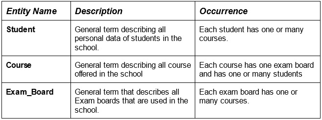
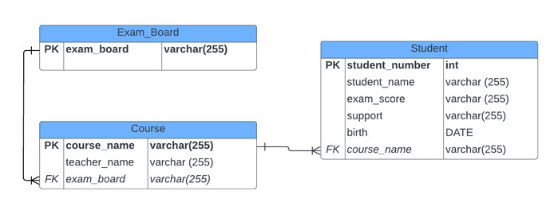

School Databse
For a school database. The following entities were be identified:

Relationship types
The relationship types are: Student has one or many courses. Course has an Exam_Board. Exam_board has many courses.
The description of the relationships are:
The description of the attributes are:
The relations for the school database are:
The database design is represented by the Entity Relationship Diagram (ERD) below which provides a unified view of the database and its relational model.

My SQL Workbench
SQL Script
- MySQL Workbench Forward Engineering SET @OLD_UNIQUE_CHECKS=@@UNIQUE_CHECKS, UNIQUE_CHECKS=0; SET @OLD_FOREIGN_KEY_CHECKS=@@FOREIGN_KEY_CHECKS, FOREIGN_KEY_CHECKS=0; SET @OLD_SQL_MODE=@@SQL_MODE, SQL_MODE='ONLY_FULL_GROUP_BY,STRICT_TRANS_TABLES,NO_ZERO_IN_DATE,NO_ZERO_DATE,ERROR_FOR_DIVISION_BY_ZERO,NO_ENGINE_SUBSTITUTION'; -- ----------------------------------------------------- -- Schema school_db -- ----------------------------------------------------- -- ----------------------------------------------------- -- Schema school_db -- ----------------------------------------------------- CREATE SCHEMA IF NOT EXISTS `school_db` DEFAULT CHARACTER SET utf8 ; USE `school_db` ; -- ----------------------------------------------------- -- Table `school_db`.`exam_board` -- ----------------------------------------------------- CREATE TABLE IF NOT EXISTS `school_db`.`exam_board` ( `exam_board` VARCHAR(255) NOT NULL, PRIMARY KEY (`exam_board`)) ENGINE = InnoDB; -- ----------------------------------------------------- -- Table `school_db`.`course` -- ----------------------------------------------------- CREATE TABLE IF NOT EXISTS `school_db`.`course` ( `course_name` VARCHAR(255) NOT NULL, `teacher_name` VARCHAR(255) NULL, `exam_board_exam_board` VARCHAR(255) NOT NULL, PRIMARY KEY (`course_name`, `exam_board_exam_board`), INDEX `fk_course_exam_board_idx` (`exam_board_exam_board` ASC) VISIBLE, CONSTRAINT `fk_course_exam_board` FOREIGN KEY (`exam_board_exam_board`) REFERENCES `school_db`.`exam_board` (`exam_board`) ON DELETE NO ACTION ON UPDATE NO ACTION) ENGINE = InnoDB; -- ----------------------------------------------------- -- Table `school_db`.`student` -- ----------------------------------------------------- CREATE TABLE IF NOT EXISTS `school_db`.`student` ( `student_number` INT NOT NULL, `student_name` VARCHAR(255) NULL, `exam_score` VARCHAR(45) NULL, `support` VARCHAR(45) NULL, `birth` DATE NULL, `course_course_name` VARCHAR(255) NOT NULL, `course_exam_board_exam_board` VARCHAR(255) NOT NULL, PRIMARY KEY (`student_number`, `course_course_name`, `course_exam_board_exam_board`), INDEX `fk_student_course1_idx` (`course_course_name` ASC, `course_exam_board_exam_board` ASC) VISIBLE, CONSTRAINT `fk_student_course1` FOREIGN KEY (`course_course_name` , `course_exam_board_exam_board`) REFERENCES `school_db`.`course` (`course_name` , `exam_board_exam_board`) ON DELETE NO ACTION ON UPDATE NO ACTION) ENGINE = InnoDB; SET SQL_MODE=@OLD_SQL_MODE; SET FOREIGN_KEY_CHECKS=@OLD_FOREIGN_KEY_CHECKS; SET UNIQUE_CHECKS=@OLD_UNIQUE_CHECKS;